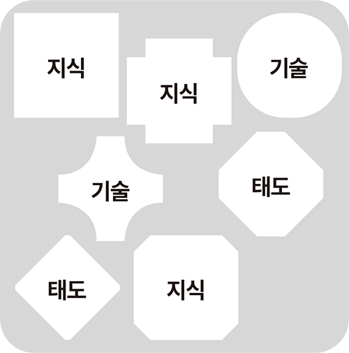
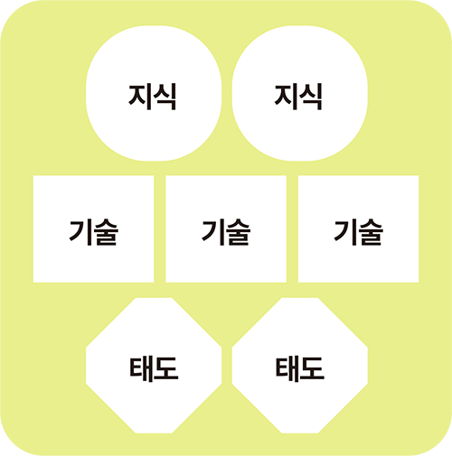

01
국가직무능력표준(NCS)는 무엇인가요?
국가직무능력표준(NCS, National Competency Standards)은 산업 현장에서 직무를 수행하기 위해 요구되는 능력(지식, 기술, 태도)을 국가적 차원에서 표준화한 것으로 능력단위 또는 능력단위의 집합을 의미합니다.
02
직업기초능력과 직무수행능력은 무엇인가요?
NCS기반 채용에서는 직업기초능력(필기시험)과 직무수행능력(전공시험)을 활용합니다.
직업기초능력
직업기초능력은 직종이나 직위에 상관없이 모든 직업인들에게 공통적으로 요구되는 기본적인 능력 및 자질을 의미합니다.
| 대영역 | 하위영역 |
| 의사소통능력 | 문서이해능력, 문서작성능력, 경청능력, 언어구사력, 기초외국어능력 |
| 수리능력 | 기초연산능력, 기초통계능력, 도표분석능력, 도표작성능력 |
| 문제해결능력 | 사고력, 문제처리능력 |
| 자기개발능력 | 자아인식능력, 자기관리능력, 경력개발능력 |
| 자원관리능력 | 시간자원관리능력, 예산관리능력, 물질자원관리능력, 인적자원관리능력 |
| 대인관계능력 | 팀웍능력, 리더십능력, 갈등관리능력, 협상능력, 고객서비스능력 |
| 정보능력 | 컴퓨터활용능력, 정보처리능력 |
| 조직이해능력 | 국제감각능력, 조직체제이해능력, 경영이해능력, 업무이해능력 |
| 직업윤리 | 근로윤리, 공동체윤리 |
| 기술능력 | 기술이해능력, 기술선택능력, 기술적용능력 |
직무수행능력
직무수행능력이란 내가 지원하는 직무를 수행하기 위해 요구되는 지식·기술·태도를 체계화한 것입니다. 직무별로 직무수행능력 시험이 모두 다르며, 기존과 동일하게 객관식 또는 논술형식으로 나오고 해당 기업체의 직무 상황을 반영한 문제들이 추가됩니다.
03
국가직무능력표준(NCS)는 어떻게 구성되어 있나요?
NCS는 총 24개 대분류, 80여 개 중분류, 270여 개 소분류, 1,000여 개의 세분류로 구성됩니다.
-
사업관리 -
경영·회계· 사무 -
금융·보험 -
교육·자연·사회과학 -
법률·경찰·소방·교도·국방 -
보건·의료 -
사회복지·종교 -
문화·예술·디자인·방송 -
운전·운송 -
영업판매 -
경비·청소 -
이용·숙박·여행·오락·스포츠 -
음식서비스 -
건설 -
기계 -
재료 -
화학·바이오 -
섬유·의복 -
전기·전자 -
정보통신 -
식품가공 -
인쇄·목재·가구·공예 -
환경·에너지·안전 -
농림어업
04
국가직무능력표준(NCS)의 목적은 무엇인가요?
산업현장

산업현장

산업현장에 적합한
인적자원 개발
05
국가직무능력표준(NCS)를 활용하면 어떤 점이 좋은가요?
기업 NCS를 활용해서 조직 내 직무를 체계적으로 분석하고, 이를 토대로 직무 중심의 인사제도(채용, 배치, 승진, 교육, 임금 등)를 운영할 수 있습니다.
| 활용분야 | 내용 | 기대효과 |
| 채용 | - NCS 직무기술서를 바탕으로 지원자의 역량을 평가할 수 있는 채용 프로세스 설계 및 도구(채용공고/서류/필기/ 면접) 개발 |
- 직무능력중심 인재채용 (기업·지원자 미스매칭 해소) - 입사 시 재교육비용 절감 |
| 재직자훈련(교육) | - 직급별로 요구되는 직무중심의 교육 훈련 이수 체계 마련 |
- 체계적인 교육·훈련시스템 마련 - 직무 맞춤교육으로 생산성 향상 - 근로자의 학습참여 촉진 |
| 배치·승진 |
- NCS 사내 경력개발경로 개발 - 배치·승진 체크리스트 개발 |
- 인재에 대한 회사의 기대와 근로자의 역량 간 불일치 해소 |
| 임금 | - NCS를 기반으로 한 직무분석으로 연공급 중심의 임금체계를 ‘직무급’ 구조로 전환 | - 근로자의 직무역량과 능력에 따라 적정 임금 지급 |
06
국가직무능력표준(NCS)기반 채용은
기존 채용, 블라인드 채용과의 차이점은 무엇인가요?
| 구분 | 기존 채용 | NCS기반 채용 | 블라인드 채용 |
| 목적 | - 공부 잘하는 학생, 시험에서 높은 점수를 득점하는 학생 선발 | - 취업준비생에게 명확한 기준을 마련해주며 직무 관련 능력만을 평가 | - 지원자에 대한 선입견을 줄 수 있는 학벌 출, 신지역 등을 배제 |
| 채용공고 | - 행정직 n명, 기술직 n명 단순정보 제공 | - 직무기술서 사전 공개 | - 채용 직무에 대한 설명자료 공개 |
| 서류전형 |
- 직무와 무관한 항목(가족사항, 학력, 지역 등) - 직무와 무관한 스펙(해외봉사, 토익 등) |
- 대학 및 전공명, 학점 대신 직무 관련 교육사항 기재 - 어학점수 지양(어학역량이 필요한 경우 최소 요구 수준으로 기재 가능) |
- 사진 부착, 학력 사항 기재 금지 - 어학점수 요구 최소화 - 출신지, 가족사항 등 기재 금지 |
| 필기전형 |
- 인성, 적성 평가 - 지식 중심 전공 필기시험 |
- 직업기초능력평가 또는 직무수행능력평가 중심 평가 | - 직무능력 및 기본인성, 조직적합성 검증을 위한 필기 전형 |
| 면접전형 | - 비구조화 면접(취미, 성장배경 등 직무 무관 질문) |
- 구조화된 직무수행능력 기반의 면접 - 지원자 인적사항 노출배제 |
- 지원자 성장배경, 가정환경 관련 질문 금지 - 면접지원자에게 지원자 인적사항 노출 배제 |